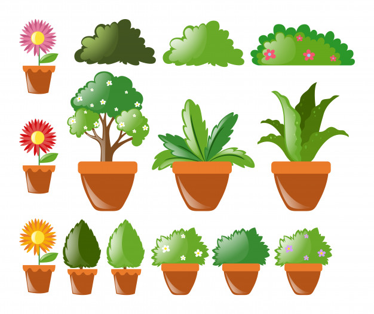

Tipos de plantas

En general, es posible diferenciar las plantas en dos grandes grupos: 1) las algas verdes y 2) las plantas terrestres. El primer grupo es muy anterior al otro evolutivamente, y por esa razón algunos estudiosos las incluyen dentro de otros reinos de la vida; pero al realizar la fotosíntesis, actúan fundamentalmente como plantas.
Las plantas terrestres, a la vez, se dividen en dos categorías diferentes:
Plantas terrestres vasculares.
Conocidas como “plantas superiores”, presentan una estructura corporal completa: tallos, raíces, hojas y mecanismos de transporte interno (mecanismos vasculares) que comunican sus órganos y recorren la distancia de sus tallos. Al mismo tiempo, las plantas superiores se dividen en:
Pteridofitas.
Plantas superiores sin semillas, comúnmente conocidas como helechos. Tienen hojas largas y enrolladas conocidas como frondes, y pueden crecer hasta un tamaño considerable.
Espermatofitas.
Plantas superiores con semillas, posteriores a los helechos en el árbol evolutivo. Este grupo lo componen las angiospermas (plantas de flores vistosas y mucho polen) y las gimnospermas (plantas leñosas), y es el grupo predominante en el planeta.
Plantas terrestres no vasculares.
Plantas que no tienen estructuras vasculares internas, por lo que no presentan una división clara entre tallo, raíz y hojas, ni alcanzan mucho tamaño. Son un grupo a medias entre helechos y algas, como las briofitas, por ejemplo, comúnmente conocidas como musgo.